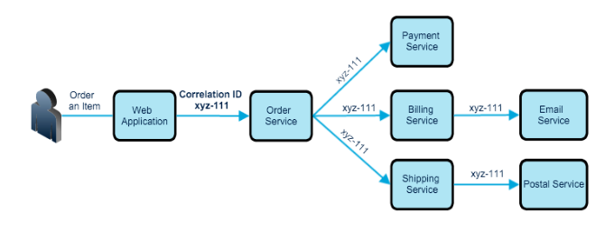
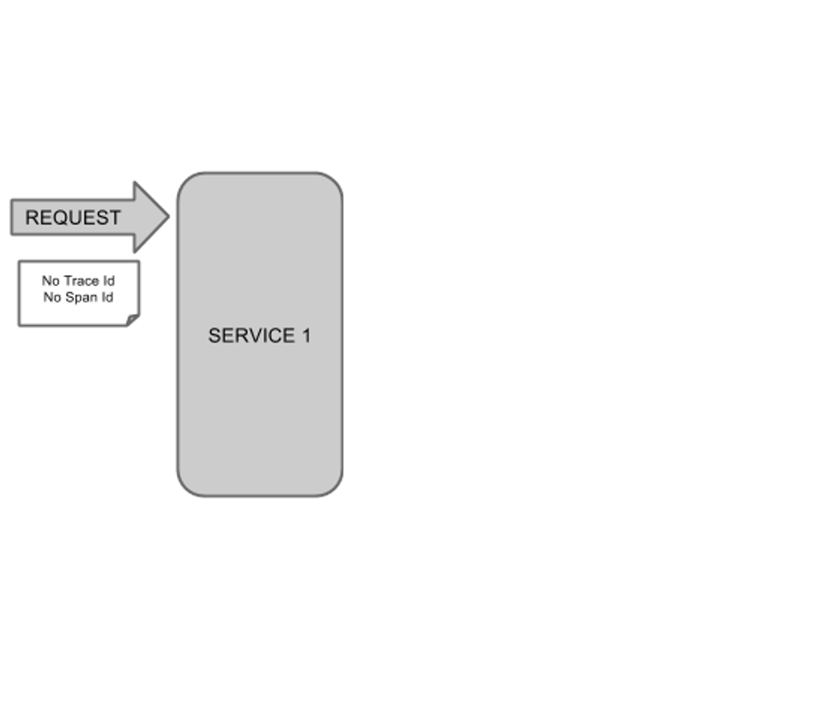
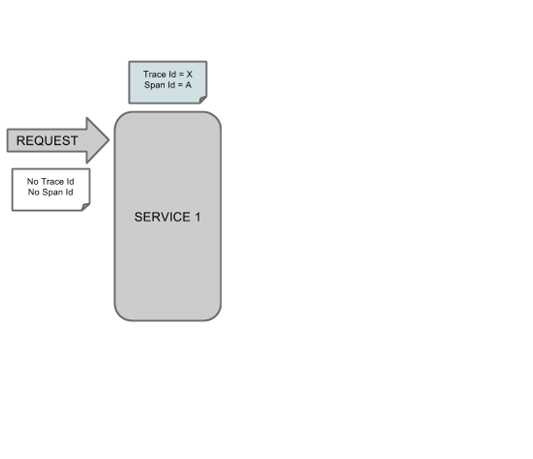
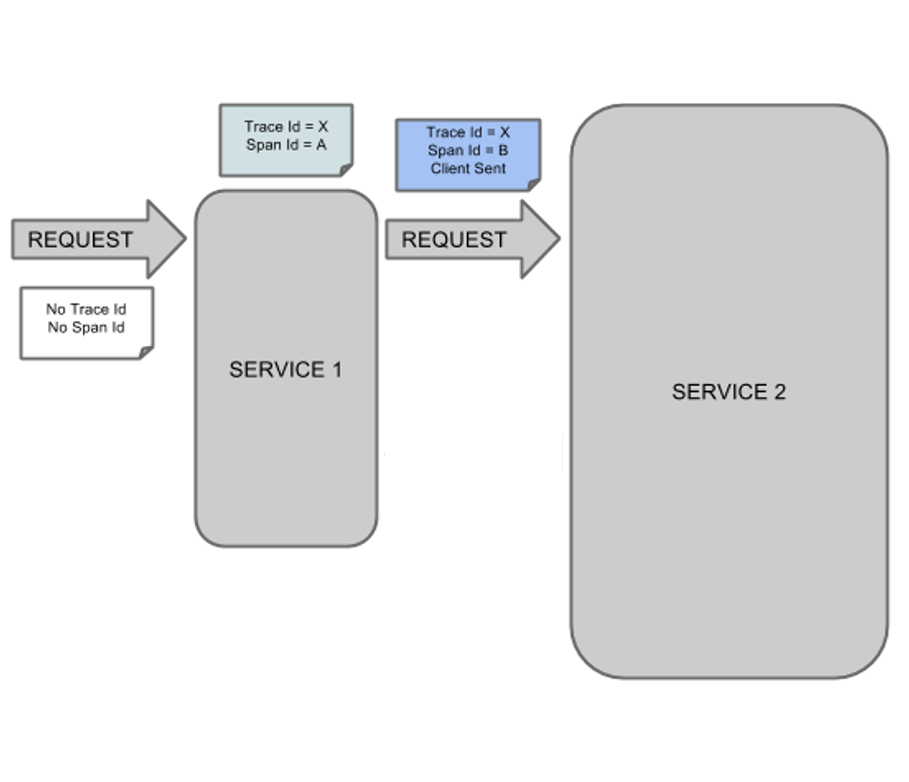
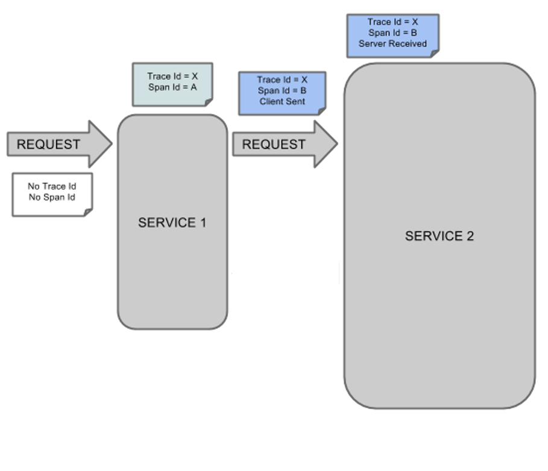
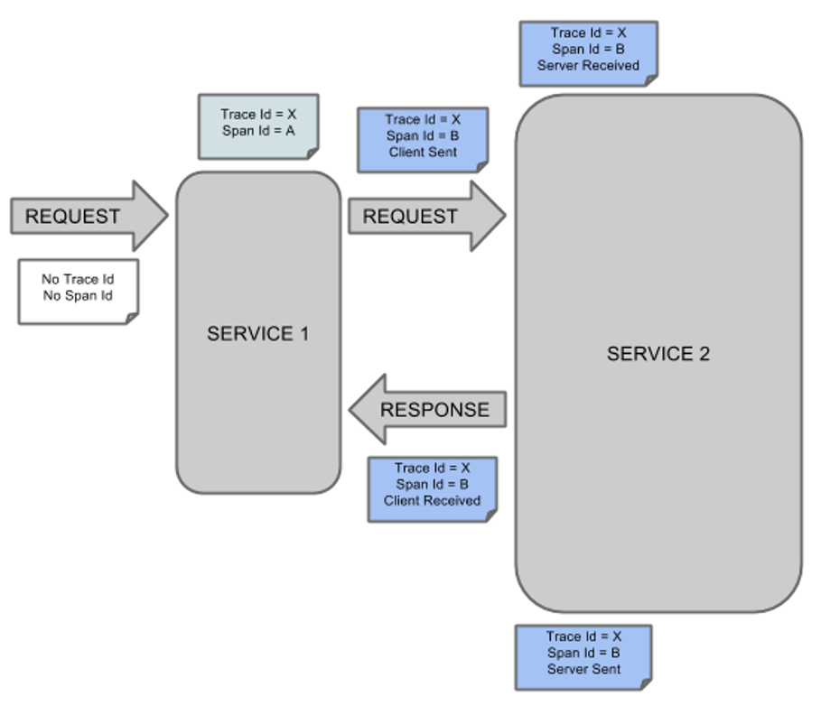
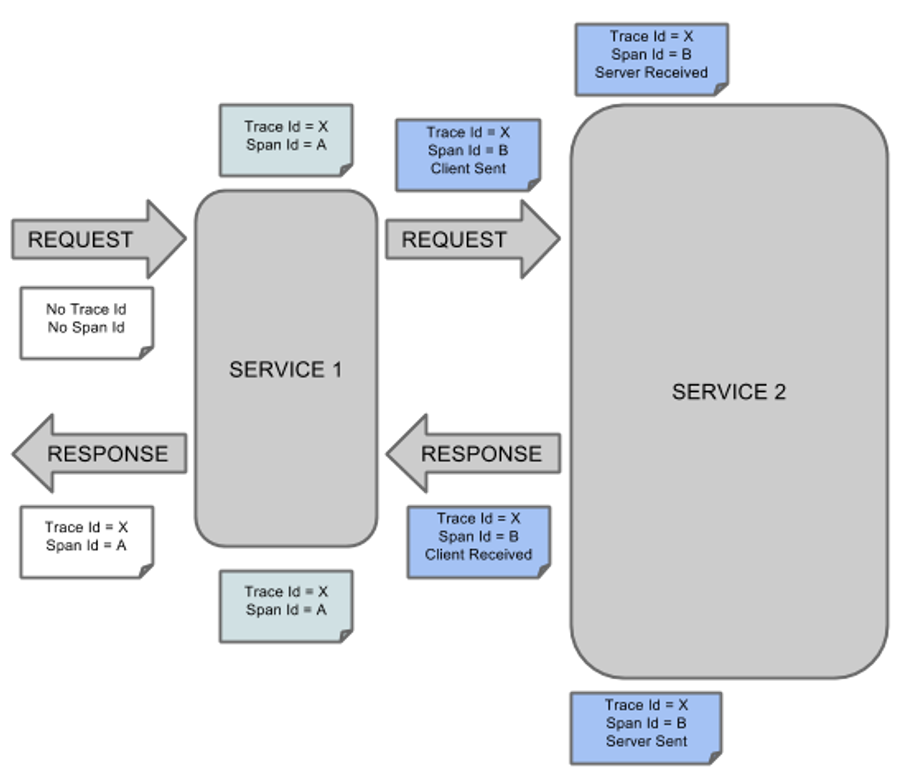
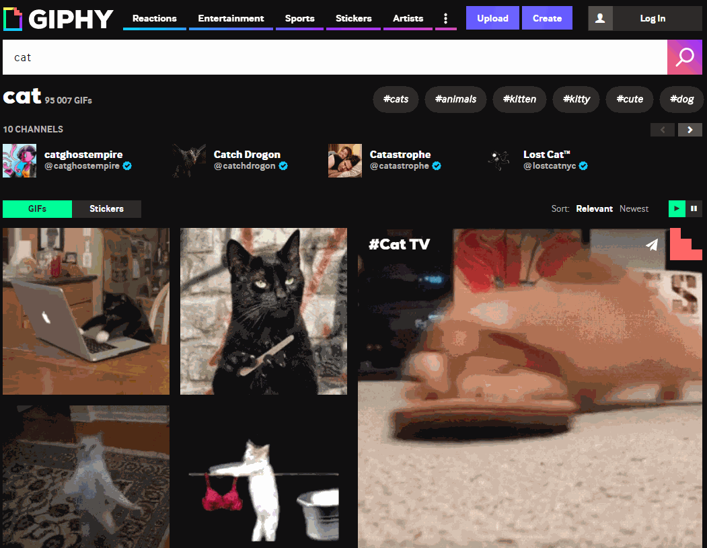
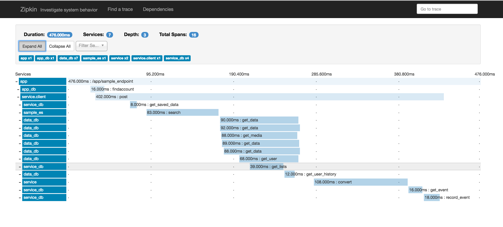

+-------------+
| IHM |
+-------------+
|
| Requête
v
+------+------+
| Serveur |
+-------------+
|
| Requête
v
+------+------+
| Service |
| GIF |
+-------------+OpenTracing
Twitter : @floriannegre
Github : fnegre
Nantes Jug 10/04/2018
Imaginons…
Architecture
Comment trouver la source de l’anomalie ?
Scénario 1 : Aucun outil
Scénario 2 : Aggrégation des logs
Scénario 3 : Identifiants de corrélation
Principe

Google Dapper
Trace-id : identifiant commun
Span-id : identifiant propre à une opération (span)







Implémentations
A la mimine
Bibliothèques
Spring Cloud Sleuth
Brave
Résolution

Nouveau problème
Zzzz …
Evénements
4 étapes dans un Span
Client Sent
Server received
Server sent
Client Received

Résolution
Imaginons, quelques mois plus tard…
un bug bloquant dans un de ces outils
La Solution…
Une spécification
Langages supportés
Java, Python, Go, PHP, JavaScript, .NET, Ruby, Rust, etc.
Technologies supportées
HTTP, Redis, JDBC, Memcached, Neo4J, Kafka, etc.
Traceurs : Zipkin, Jaeger, Lightstep…
Qui l’utilise ?
Cloud Native Computing Fundation
Un peu de recul
Pour finir
Merci
Questions & infos
Twitter : @floriannegre